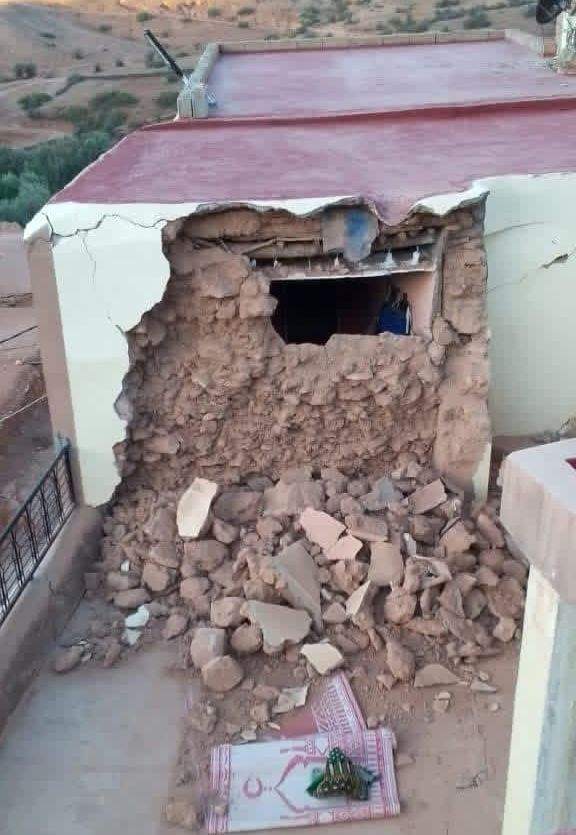
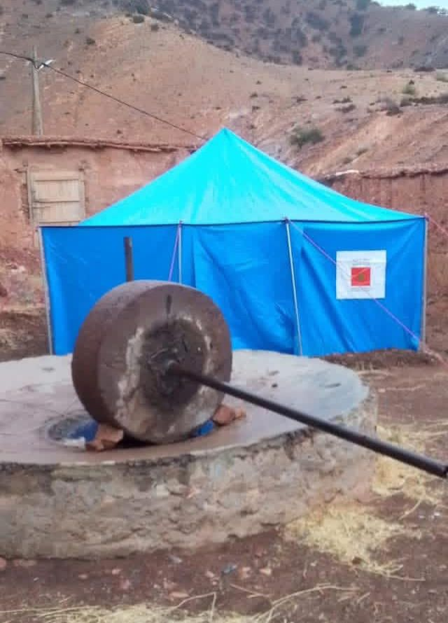
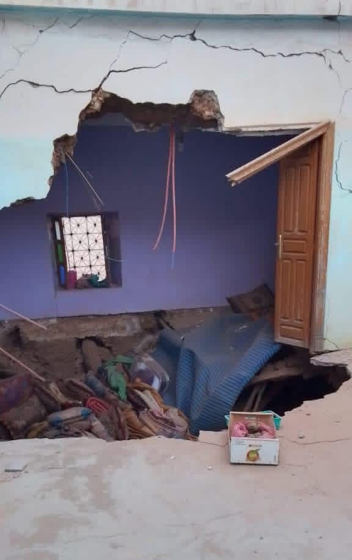
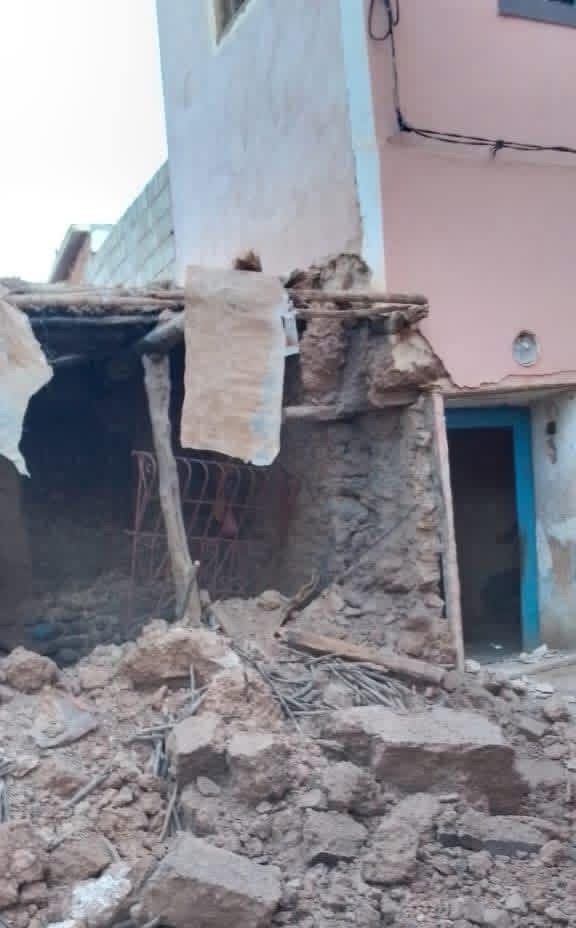
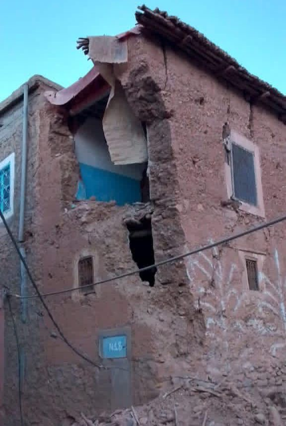
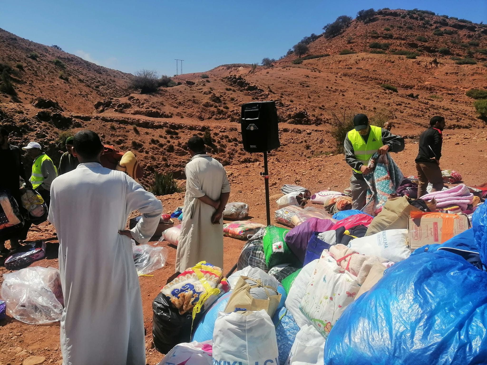
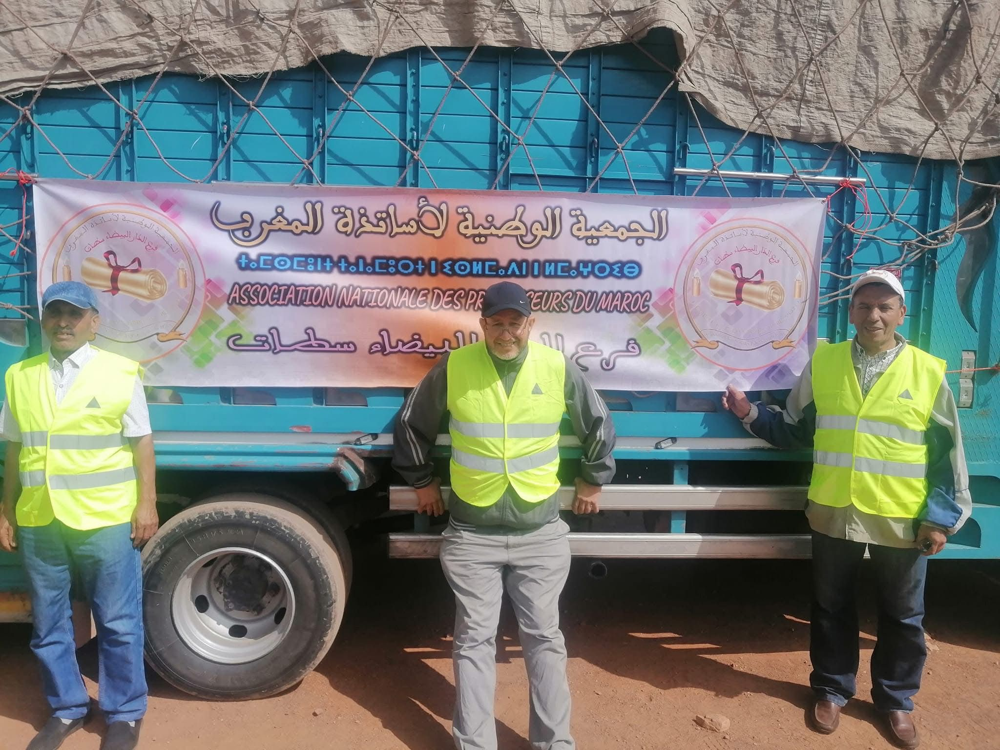
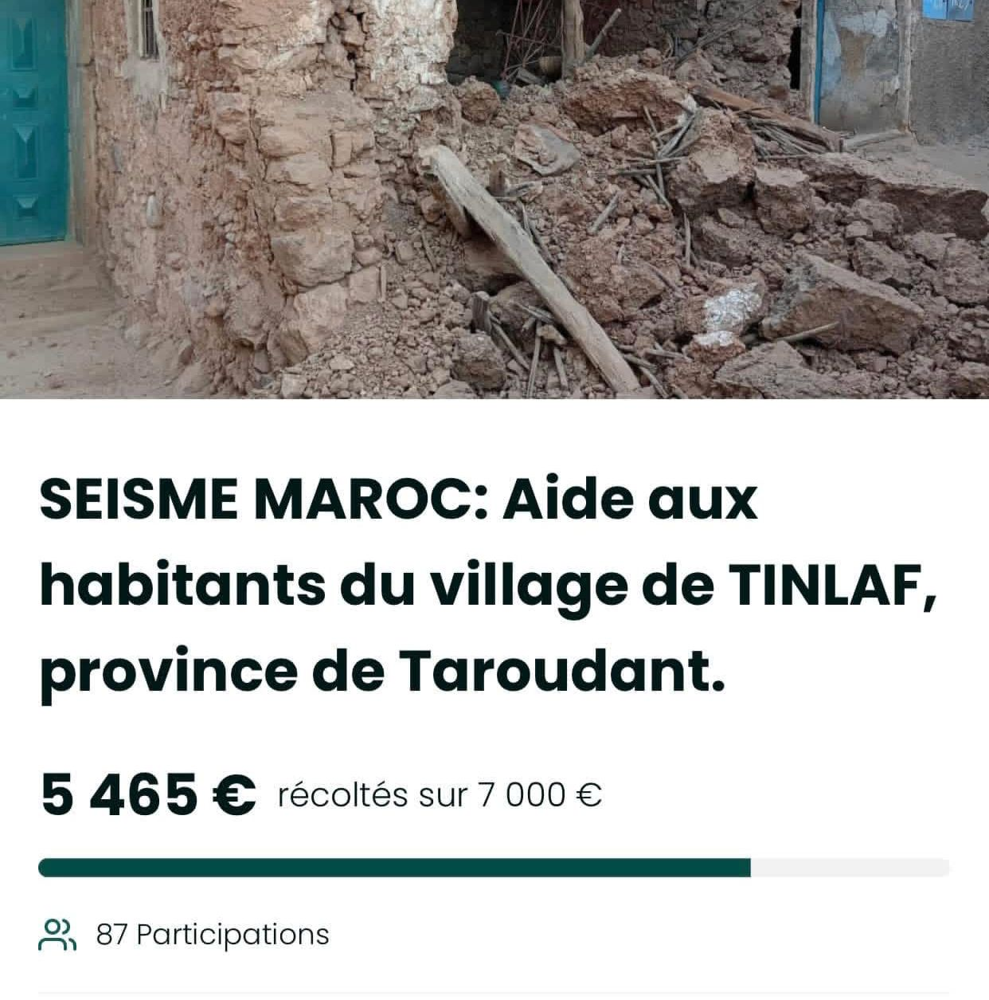
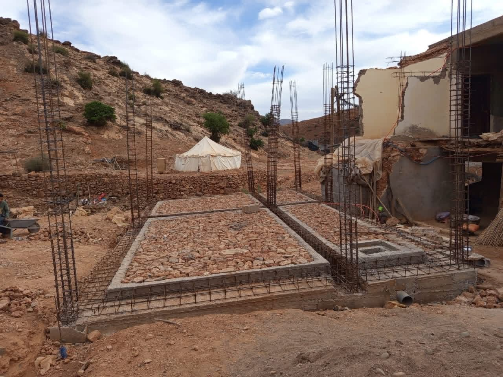

Solidarité après le séisme d’Al Haouz
Interventions d’urgence et accompagnement des familles touchées par le séisme dans le douar Tinlaf et ses environs.
عقب الزلزال الذي ضرب منطقة الحوز، تعرّض دوار تينلاف لأضرار مادية كبيرة، ولله الحمد لم تُسجَّل أي خسائر بشرية. فقد تضررت مجموعة من منازل الدوار ما بين انهيار جزئي وكلي، كما لحق المسجد ـ الذي كان قد تم الانتهاء من ترميمه بالكامل ـ ضرر كبير جعله غير صالح للصلاة.
وفي ظل هذه الأزمة، سارعت جمعية تينلاف إلى التدخل من أجل دعم الساكنة والتخفيف من معاناتهم. فقد قامت بتوفير الأفرشة والملابس والقفف الغذائية لجميع الأسر، خصوصًا وأن السكان اضطروا للبقاء خارج منازلهم لعدة أيام. كما تم توفير الخيام بتعاون مع الجماعة القروية، إلى جانب استقبال قوافل الدعم التي كان لها دور مهم في تجاوز المرحلة الحرجة.
كما خصصت الجمعية مقرها الرئيسي ليكون مسجدًا مؤقتًا لإقامة الصلوات اليومية، ضمانًا لاستمرار الشعائر الدينية في ظرفية صعبة. وبعد انطلاق مرحلة التعويضات وإعادة الإعمار، واجهت بعض الأسر إقصاءً من الدعم لأسباب مختلفة. وهنا تدخّلت الجمعية مرة أخرى، حيث ساهمت في بناء منزل لأسرة متضررة لم تستفد من دعم إعادة الإعمار، رغم أنها تقطن في قرية مجاورة، وذلك بفضل تضامن سكان تينلاف والدواوير المجاورة.
وقد شكّل هذا التدخل نموذجًا للتعاون والتآزر الاجتماعي، وأبرز الدور الإنساني والتنموي الذي تضطلع به الجمعية في مثل هذه المحن.
وفي ظل هذه الأزمة، سارعت جمعية تينلاف إلى التدخل من أجل دعم الساكنة والتخفيف من معاناتهم. فقد قامت بتوفير الأفرشة والملابس والقفف الغذائية لجميع الأسر، خصوصًا وأن السكان اضطروا للبقاء خارج منازلهم لعدة أيام. كما تم توفير الخيام بتعاون مع الجماعة القروية، إلى جانب استقبال قوافل الدعم التي كان لها دور مهم في تجاوز المرحلة الحرجة.
كما خصصت الجمعية مقرها الرئيسي ليكون مسجدًا مؤقتًا لإقامة الصلوات اليومية، ضمانًا لاستمرار الشعائر الدينية في ظرفية صعبة. وبعد انطلاق مرحلة التعويضات وإعادة الإعمار، واجهت بعض الأسر إقصاءً من الدعم لأسباب مختلفة. وهنا تدخّلت الجمعية مرة أخرى، حيث ساهمت في بناء منزل لأسرة متضررة لم تستفد من دعم إعادة الإعمار، رغم أنها تقطن في قرية مجاورة، وذلك بفضل تضامن سكان تينلاف والدواوير المجاورة.
وقد شكّل هذا التدخل نموذجًا للتعاون والتآزر الاجتماعي، وأبرز الدور الإنساني والتنموي الذي تضطلع به الجمعية في مثل هذه المحن.
Suite au séisme qui a frappé la région d’Al Haouz, le douar Tinlaf a subi d’importants dégâts matériels, et, par la grâce de Dieu, aucune perte humaine n’a été enregistrée. Plusieurs habitations ont été touchées, entre effondrement partiel et destruction totale, et la mosquée — qui venait tout juste d’être entièrement rénovée — a été gravement endommagée au point de devenir inutilisable pour la prière.
Dans ce contexte de crise, l’Association Tinlaf est intervenue rapidement pour soutenir les habitants et alléger leurs souffrances. Elle a fourni des matelas, des vêtements et des paniers alimentaires à l’ensemble des familles, d’autant plus que celles-ci ont dû rester à l’extérieur de leurs maisons pendant plusieurs jours. Des tentes ont également été mises à disposition en collaboration avec la commune rurale, en plus de l’accueil de différentes caravanes de solidarité qui ont joué un rôle important durant cette période critique.
L’association a aussi décidé de mettre son siège principal à disposition comme mosquée provisoire pour l’accomplissement des prières quotidiennes, afin de garantir la continuité des pratiques religieuses malgré la situation difficile. Par la suite, lors du lancement de la phase des indemnisations et de la reconstruction, certaines familles ont été exclues du dispositif d’aide pour diverses raisons.
Face à cela, l’association est de nouveau intervenue en contribuant à la construction d’une maison pour une famille sinistrée qui n’avait pas bénéficié du programme de reconstruction, bien qu’elle réside dans un douar voisin, et ce grâce à la solidarité des habitants de Tinlaf et des douars environnants. Cette intervention a constitué un véritable exemple de coopération et de solidarité sociale, et a mis en lumière le rôle humain et développemental que joue l’association dans de telles épreuves.
Dans ce contexte de crise, l’Association Tinlaf est intervenue rapidement pour soutenir les habitants et alléger leurs souffrances. Elle a fourni des matelas, des vêtements et des paniers alimentaires à l’ensemble des familles, d’autant plus que celles-ci ont dû rester à l’extérieur de leurs maisons pendant plusieurs jours. Des tentes ont également été mises à disposition en collaboration avec la commune rurale, en plus de l’accueil de différentes caravanes de solidarité qui ont joué un rôle important durant cette période critique.
L’association a aussi décidé de mettre son siège principal à disposition comme mosquée provisoire pour l’accomplissement des prières quotidiennes, afin de garantir la continuité des pratiques religieuses malgré la situation difficile. Par la suite, lors du lancement de la phase des indemnisations et de la reconstruction, certaines familles ont été exclues du dispositif d’aide pour diverses raisons.
Face à cela, l’association est de nouveau intervenue en contribuant à la construction d’une maison pour une famille sinistrée qui n’avait pas bénéficié du programme de reconstruction, bien qu’elle réside dans un douar voisin, et ce grâce à la solidarité des habitants de Tinlaf et des douars environnants. Cette intervention a constitué un véritable exemple de coopération et de solidarité sociale, et a mis en lumière le rôle humain et développemental que joue l’association dans de telles épreuves.








